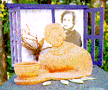
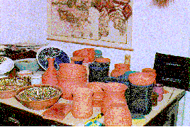
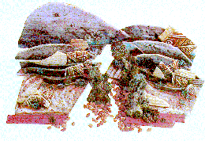
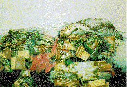
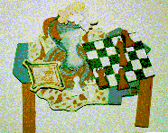
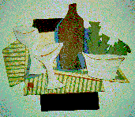
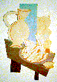
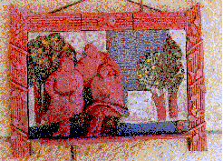
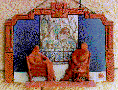

 
This is Vera Tamari's self portrait and a view of her studio. The self portrait dates from 1994 and measures 15 x 18 x 14 inches. Tamari makes bas-relief pictures from clay. She glazes and fires them herself. Often she assembles the single pictures from several pieces. Sometimes she paints on sections of the relief with traditional painting materials. Sometimes these pieces are arranged for a table top or are assembled on wooden boards and framed while at other times they are single pieces which hang with only a leather thong. This is Vera Tamari's self
 
On the left is "Rhythms of the Past II" measuring 10 x 17 x 14 inches done in 1994, a sculpturral table tob work made up of small pictorial reliefs. On the right is "Rhythms of the Land"
I fell in love with her work when I first saw it at an exhibition at the United Nations in New York. I was uncomfortable on finding that it was made of fired clay. How could something so fine be made of such fragile breakable materials. Tamari had made things worse by making those reliefs large and thin.
  
Three still life reliefs dating from 1994 and 1995. They measure between 7 and 14 inches.
During the past two springs I had an opportunity to visit Palestine and became acquainted with Vera. As we talked about her art, I learnt something about the aesthetics of fragility which so absorbed me on first seeing her work. I began to wonder if this fragility is a metaphor for all the destruction we Palestinians have seen of our homes and families.
 
On the left is "family" and, on the right is "Margo and Marie". Both are 14" x 10" and were done in 1993. These wonderful family scenes are like intimate little snap-shots. Tender views of old sisters and family groups with gestures familiar to me from my own family. I found them sweet and moving. Vera Tamari is impressive in the way in which she makes beauty from the things we take for granted.
Vera Tamari was born in Yafa and now lives in one of the small bits of Palestine left to us after the onslaught of Israeli settlers. She teaches drawing, design, and mixed media at the University of BeirZeit.
Select from the following menu representing the entire studio:
My Grandmother...
The Town of Beisan...
The Arab City of Jerusalem...
Sabah Told Me...
My Home in Yafa...
Khader Told Me...
Olives of Palestine...
Our Students...
A Taxi Ride in Bethlehem...
Written by Doctor Fathiye Saudi...
Hasan Told Me...
A Visit to Kafr Qasem...
The artist of Kafr Qasem...
The Massacre at Kafr Qasem (not yet ready)
Rana Bishara, painter, intallation artist...
Tayseer Barakat, painter...
Sari Khouri, painter...
Abdel Tamam, painter...
Vera Tamari, ceramist and painter...
Adnan Yahya, painter and graphic artists...